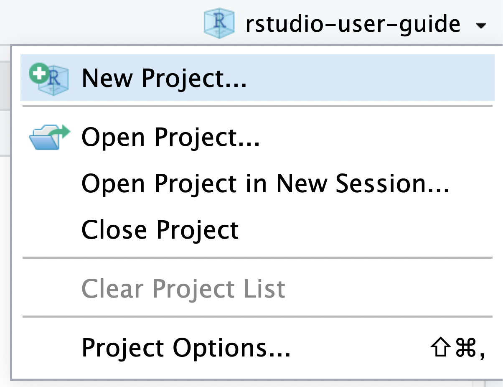

05:00
Reproducibilidad
Repetibilidad, Replicabilidad, Reproducibilidad, y otras erres
| Goodman et al. (2016) | Claerbout & Karrenbach (1992) | Association for Computing Machinery (2020) |
|---|---|---|
| Repetibilidad | ||
| Reproducibilidad de los métodos | Reproducibilidad | Replicabilidad |
| Reproducibilidad de los resultados | Replicabilidad | Reproducibilidad |
| Reproducibilidad inferencial |

Entorno de desarrollo integrado (IDE)
Aplicación que proporciona servicios integrales para facilitar el desarrollo de software.
Ventajas:
- Resaltado de sintaxis
- Autocompletado de texto
- Manejo de librerías
- Construir, compilar o ejecutar
- y mucho más…
IDEs populares:
- Emacs
- RStudio
- vim
- VS Code

Siempre empezar R desde cero
Siempre es recomendable trabajar en un espacio de trabajo desde cero, sin guardar o cargar cada vez. En RStudio se puede puede hacer de esta forma.
Siempre es recomendable reiniciar R de vez en cuando. En RStudio se puede hacer en Session > Restar R. Atajo de teclado: Ctrl-Shift-F10Ctrl-Shift-F10

.Rdata ir a Tools > Global Options.Proyectos de RStudio
Los proyectos de RStudio facilitan la división del trabajo en varios contextos, con su propio directorio y espacio de trabajo, historial y documentos.

La barra de herramientas de proyectos se encuentra en la esquina superior derecha de RStudio. Muestra el nombre del proyecto actual, y tiene comandos para:

El nombre de las cosas
No
myabstract.docx
Joe’s Filenames Use Spaces and Punctuation.xlsx
figure 1.png
fig 2.png
JW7d^(2sl@deletethisandyourcareerisoverWx2*.txt
Sí
2014-06-08_abstract-for-sla.docx
joes-filenames-are-getting-better.xlsx
fig01_scatterplot-talk-length-vs-interest.png
fig02_histogram-talk-attendance.png
1986-01-28_raw-data-from-challenger-o-rings.txt
«Lo lamento, pero hizo que el emperador perdiera el estilo»
Un buen estilo de codificación es como una correcta puntuación: se puede prescindir de él, perofacilitalalectura. Todas las guías de estilo se basan fundamentalmente en opiniones. Algunas decisiones realmente facilitan el uso del código, pero muchas decisiones son arbitrarias. Lo más importante de una guía de estilo es que proporciona coherencia, lo que facilita la escritura del código porque hay que tomar menos decisiones.

Guías de estilo
- Guía de estilo de Bioconductor
- Guía de estilo de Colin Gillespie
- Guía de estilo de Google
- Guía de estilo del Tidyverse
Dos paquetes de R soportan la Guía de estilo del Tidyverse: styler y lintr.

Flujo de trabajo

Procesos y código
Procesos y objetos
Control de versiones
Un control de versiones es un sistema que registra los cambios realizados en un archivo o conjunto de archivos a lo largo del tiempo, de modo que puedas recuperar versiones específicas más adelante. […] en realidad puedes hacer lo mismo con casi cualquier tipo de archivo que encuentres en una computadora. Chacon (2014)
Un método básico y rudimentario del control de versiones es tener copias de un mismo archivo.
2015-11-09_package-installation.R
2016-05-21_package-installation.R
2017-09-05_package-installation.R
2018-06-29_package-installation.R

Git y GitHub
Git es un sistema de control de versiones. Git gestiona la evolución de un conjunto de archivos -llamado repositorio- de una forma sana y muy estructurada. En un flujo de trabajo basado en Git, documentas y, opcionalmente, expones tu trabajo a medida que avanzas. La comunicación y la colaboración son las aplicaciones estrella del control de versiones. Bryan (2018).

GitHub es el mayor proveedor de alojamiento de repositorios Git, y es el punto de encuentro para que millones de desarrolladores colaboren en el desarrollo de sus proyectos. Un gran porcentaje de los repositorios Git se almacenan en GitHub, y muchos proyectos de código abierto lo utilizan para hospedar su Git, realizar su seguimiento de fallos, hacer revisiones de código y otras cosas. Chacon (2014).
Entornos reproducibles
Un entorno (environment) consiste en todas las dependencias necesarias para que el código se ejecute correctamente. Esto incluye el propio R, los paquetes de R y las dependencias del sistema. Puede ser difícil gestionar entornos reproducibles:
- El código que solía ejecutarse ya no se ejecuta, a pesar de que el código no ha cambiado.
- Tener miedo de actualizar o instalar un nuevo paquete, ya que podría romper su código o el de otra persona.
- Escribir
install.packages()en tu entorno no hace nada, o no hace lo correcto.

Estos retos pueden abordarse mediante una cuidadosa combinación de herramientas y estrategias. Acá sólo abordamos: la actualización segura de paquetes y la colaboración en equipo. Quedando por fuera el manejo de varias versiones de R y las dependencias del sistema, para lo cual es recomendable investigar sobre rig y Docker.
renv
renv ayuda a crear entornos reproducibles para sus proyectos de R, haciendo los proyectos:
- Aislados: la instalación de un paquete nuevo o actualizado para un proyecto no romperá sus otros proyectos, y viceversa.
renvproporciona a cada proyecto su propia biblioteca privada. - Portátil: transporte fácilmente sus proyectos de un ordenador a otro, incluso a través de diferentes plataformas.
renvfacilita la instalación de los paquetes de los que depende su proyecto. - Reproducible:
renvregistra las versiones exactas de los paquetes de los que depende, y asegura que esas versiones exactas son las que se instalan allá donde vaya.


renv.